Bedroom
Repeated frame intersections and drawer corners provide stable landmarks throughout the overlap.
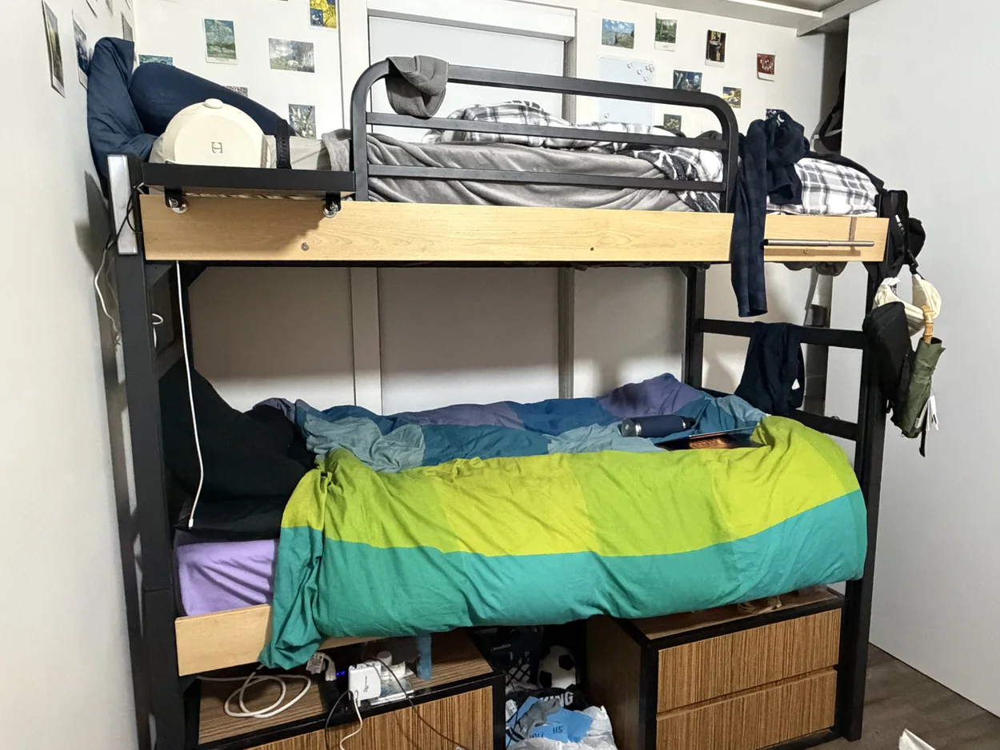
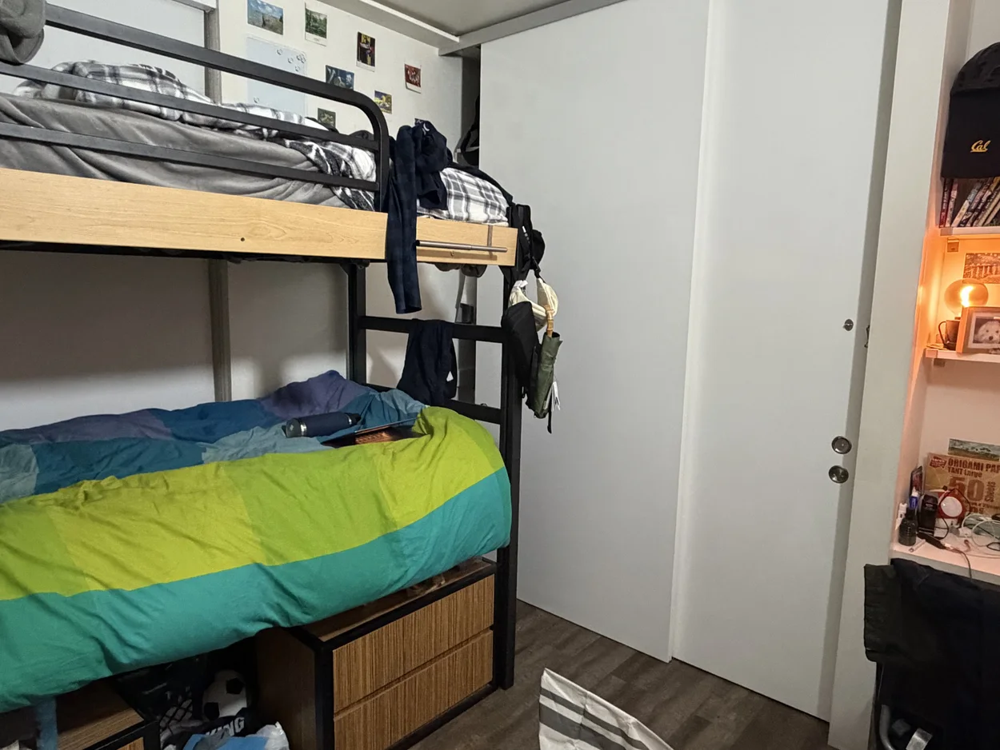
Project 04 · Parts A + B · Fall 2026
Recovering projective geometry from hand-picked correspondences, then teaching the pipeline to find, match, and robustly filter its own features before stitching each scene automatically.
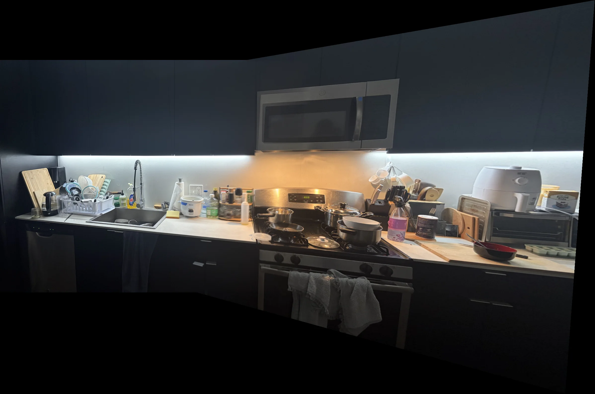
I photographed three scenes in overlapping pairs, rotating the camera from approximately one viewpoint instead of translating it. Each pair preserves enough shared structure to identify the same physical landmarks in both images.
The bedroom is dominated by a rigid bed frame, the bicycle area mixes several depths, and the kitchen offers long horizontal cabinet and counter edges. Together they expose both the strengths and limitations of a single planar projective model.
Repeated frame intersections and drawer corners provide stable landmarks throughout the overlap.


Wall seams and fixed structural details anchor the alignment; nearby bicycles reveal foreground parallax.
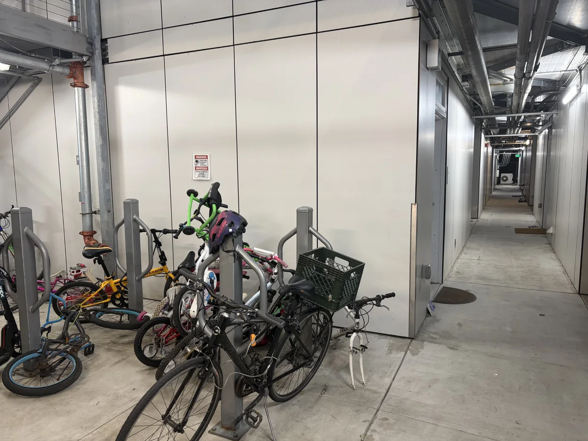
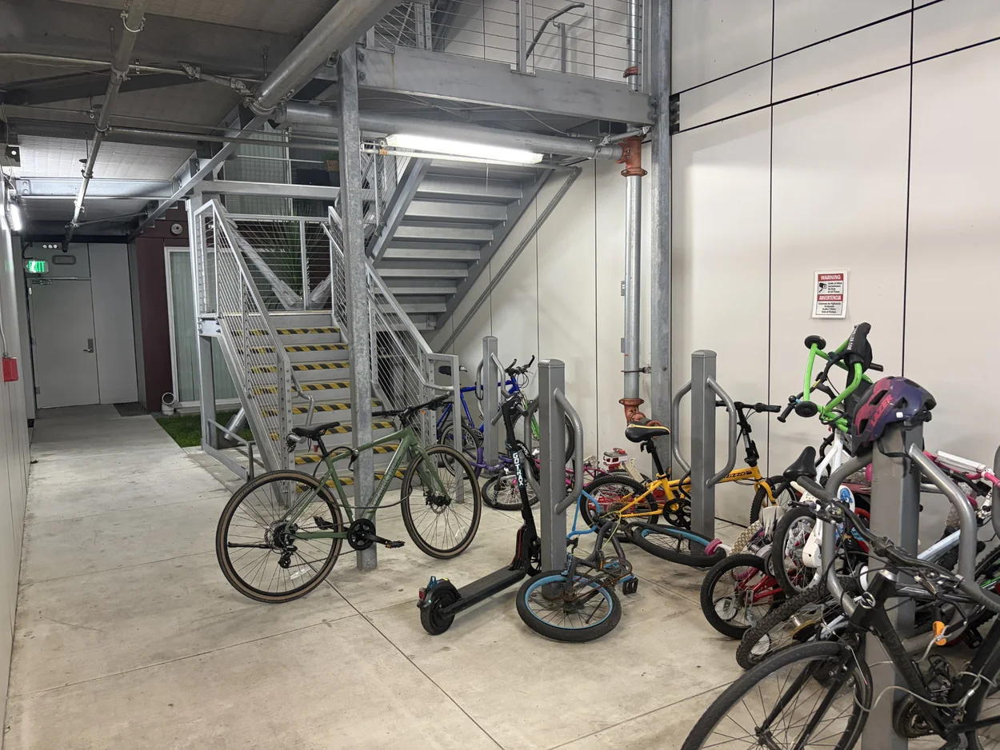
Cabinet seams, the counter edge, and fixed appliance features distribute correspondences across the shared view.
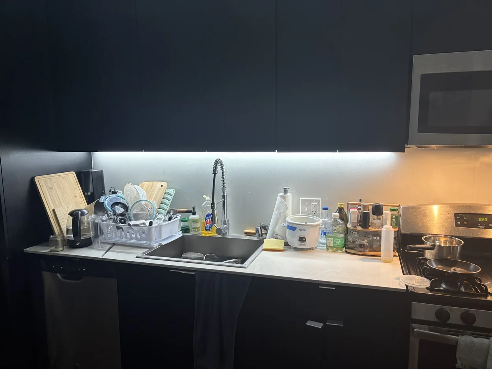
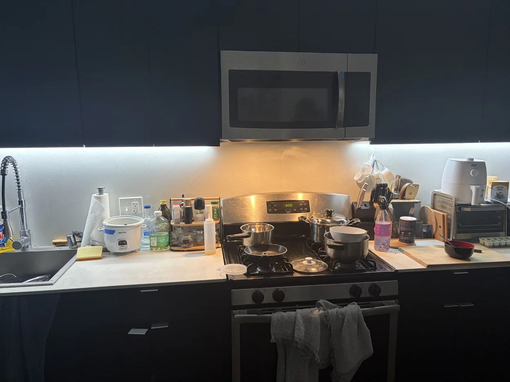
A homography maps a source point to a destination point in homogeneous
coordinates. Fixing h33 = 1 leaves eight unknowns.
Every correspondence contributes two linear equations, so eight matches
form an overdetermined system that I solve with NumPy least squares.
Before solving, I apply Hartley normalization: translate each point set
to zero mean and scale its average distance from the origin to
√2. I then denormalize the fitted matrix. This improves
conditioning without changing the projective mapping.
The final coordinate is obtained by dividing the first two homogeneous
components by the third. In each mosaic, H maps the second
photograph into the unchanged reference photograph.
Stacking these two rows for every (x, y) → (u, v)
match gives Ah = b. Well-spread, non-collinear points make
the fit substantially more stable.
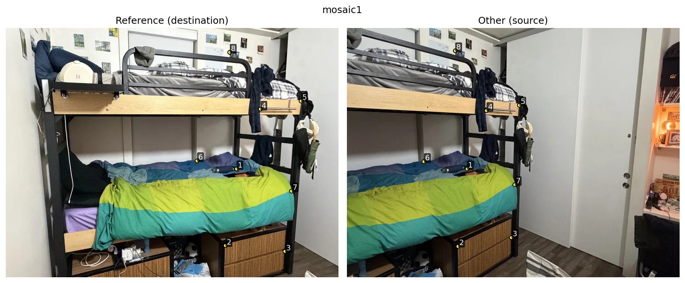
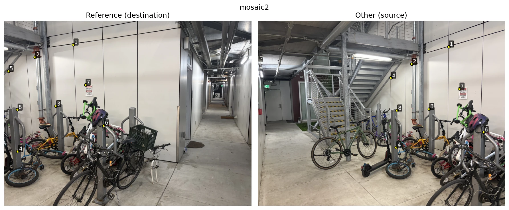
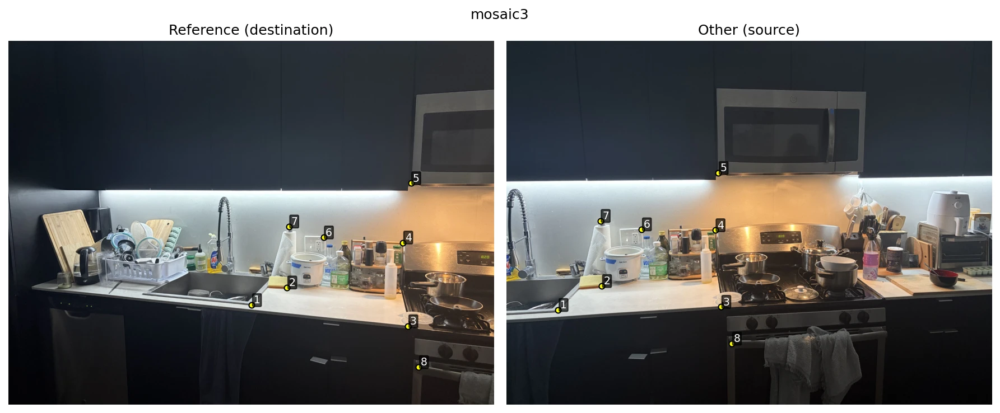
[[ 0.3853 -0.0333 522.4329]
[-0.1986 0.7898 87.2100]
[-0.0005 -0.0000 1.0000]][[ 2.7862 0.0641 -1852.0046]
[ 0.5413 2.3993 -550.7210]
[ 0.0014 0.0001 1.0000]][[ 0.5030 -0.0056 537.5800]
[-0.1568 0.8589 78.1193]
[-0.0004 0.0000 1.0000]]
Forward mapping can leave holes because transformed source pixels do not
necessarily land on integer destination coordinates. Instead, I enumerate
every destination pixel, apply H-1, and sample the
resulting floating-point location in the source image.
For rectification, four photographed corners map to a rectangle with the physical surface's aspect ratio. The laptop result is especially revealing: after rectification, text captured at an angle becomes directly readable.
A validity mask rejects samples outside the source image. Nearest-neighbor rounds to one pixel; bilinear interpolation blends the surrounding four pixels using their fractional x and y distances.
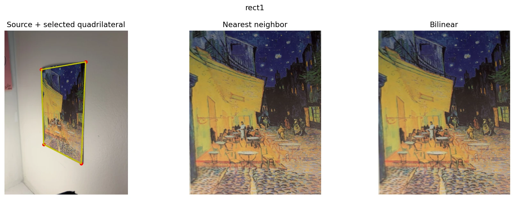
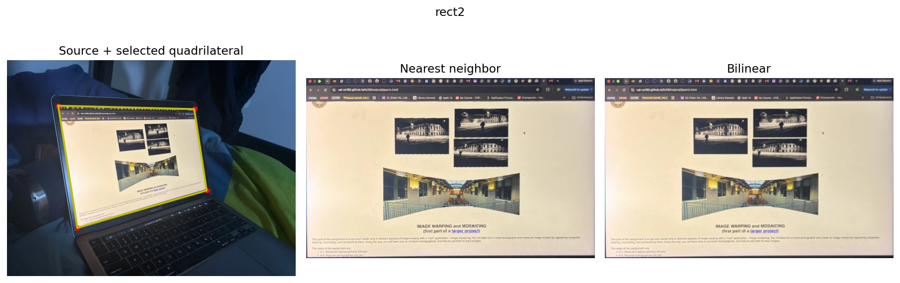
Preserves exact source values, but diagonal edges and small text can look jagged.
Uses four weighted samples for smoother edges, with a small amount of interpolation blur.
Keeps out-of-bounds samples from contributing to either rectified images or mosaics.
I keep the reference image in its original coordinate system, project the second image into that system, and compute a canvas large enough to contain both. In their overlap, each image receives a weight equal to its distance from the nearest validity-mask boundary; normalizing the two weights creates a gradual transition instead of a hard seam.
The angled outer boundaries are the honest footprint of projective warping. Black regions are uncovered canvas, not missing image data.
Distance-transform weights are largest inside each image and taper toward its boundary. The blend softens exposure differences while preserving all valid pixels covered by either view.
Rigid bed-frame and drawer landmarks produce the tightest fit of the three scenes. Feathering makes the handoff across the bed and wall difficult to locate at normal viewing size.
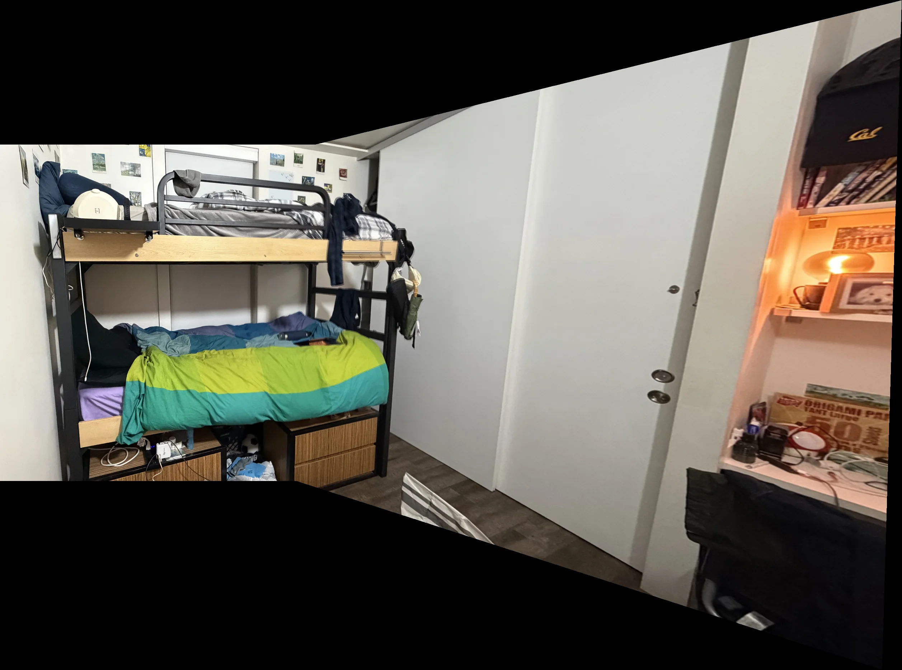
The wall and architectural structure align well, while nearby bicycles retain some doubling. Their depth changes relative to the background when the handheld viewpoint shifts, violating the single-homography model.
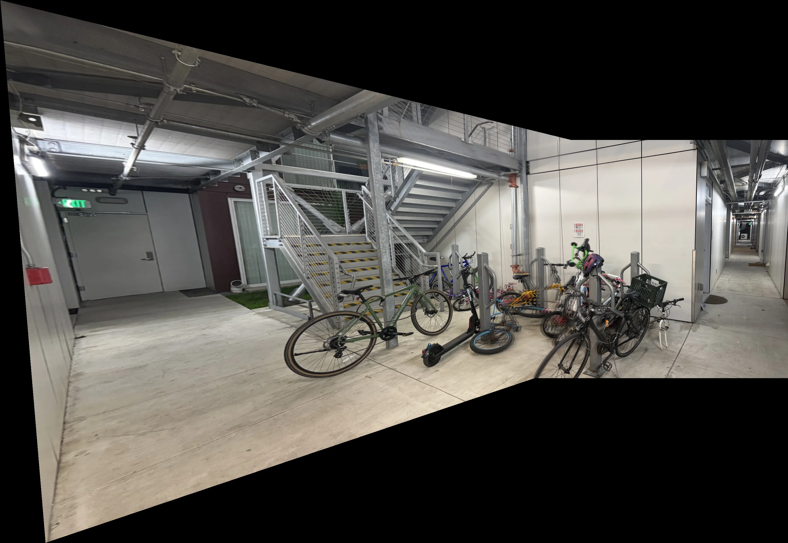
Cabinet seams and the counter form a stable shared structure across the pair. The resulting mosaic nearly doubles the horizontal field of view while keeping the microwave, stove, and counter continuous.
Part A established the geometry; Part B removes the manual point picker. Following the simplified MOPS pipeline, each image now proposes its own corners, describes them locally, matches them across the pair, and lets RANSAC decide which correspondences agree on one projective model.
I reused the same three photo pairs and the same inverse warp and feathering code. That isolates the real experiment: changing only how the homography correspondences are obtained.
Harris responses at one scale.
Normalized 8×8 appearance patches.
Lowe first-to-second neighbor ratio.
Four-point RANSAC and inlier refit.
I begin with the provided single-scale Harris detector and retain local response maxima outside a 24-pixel border. This produces tens of thousands of candidates—dense around texture, but too clustered to form a stable, efficient matching set.
Adaptive Non-Maximal Suppression assigns each candidate the distance to its
nearest substantially stronger neighbor. Keeping the 500 largest radii
spreads points across the full frame while preserving locally distinctive
structure. I use crobust = 0.9.
The minimum considers points with
f(xj) > f(xi) / 0.9.
Large radii identify strong corners that are not crowded by an even
stronger response.
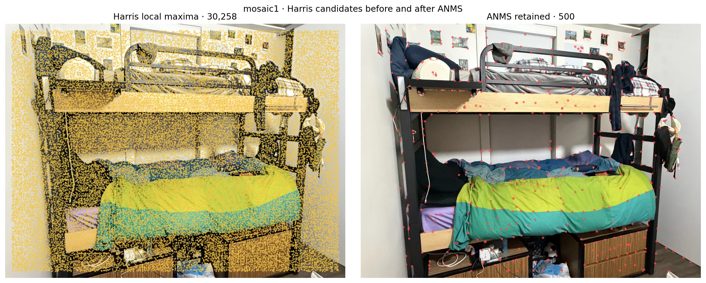
Around every ANMS point, I extract an axis-aligned 40×40 grayscale window. After a Gaussian blur, averaging each 5×5 cell reduces the neighborhood to an 8×8 descriptor. Sampling a broad window makes the representation less sensitive to one-pixel shifts than an unblurred 8×8 crop.
Each 64-value vector is bias/gain normalized to zero mean and unit standard deviation. The descriptor therefore emphasizes the local intensity pattern instead of absolute exposure.
The course simplification uses axis-aligned descriptors, so this stage is not rotation invariant. Every retained point still has a complete 40×40 support window because corners near the image boundary were removed first.
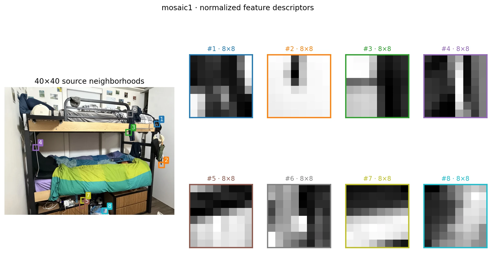
I compute every pairwise descriptor distance. A proposed match survives when
its closest neighbor is much better than its second-closest neighbor:
d1 / d2 < 0.80. This is Lowe's ratio test;
it rejects ambiguous patches such as repeated cabinet or bed-frame edges.
I also require mutual nearest neighbors. The remaining lines are plausible appearance matches, not yet geometric truth—several outliers are still visible, which is exactly what RANSAC must handle next.
Rigid bed-frame edges and textiles yield the densest, cleanest appearance agreement.
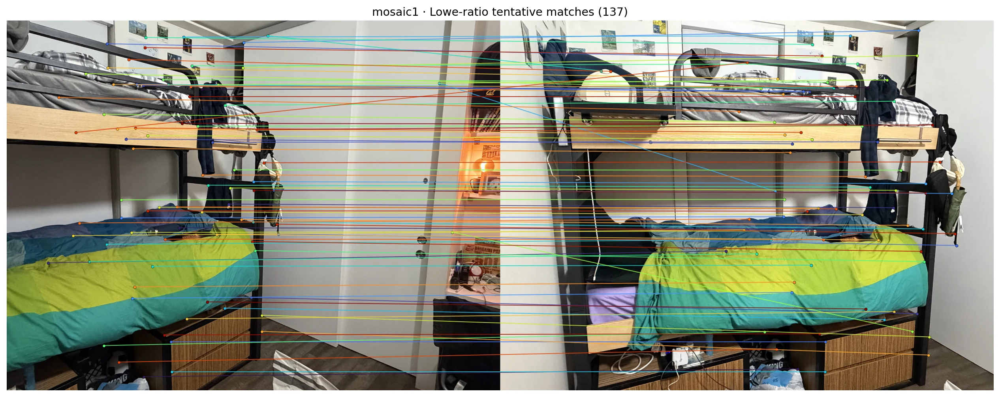
Repeated bicycle geometry and foreground depth make this the most ambiguous pair.
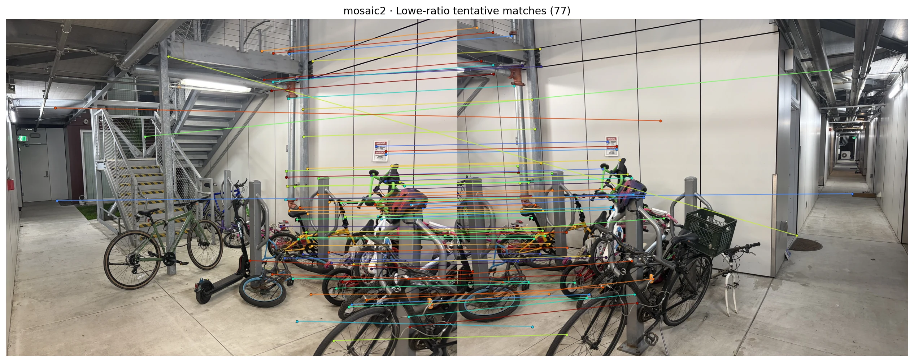
Counter objects and appliance boundaries provide many distinctive local patches.
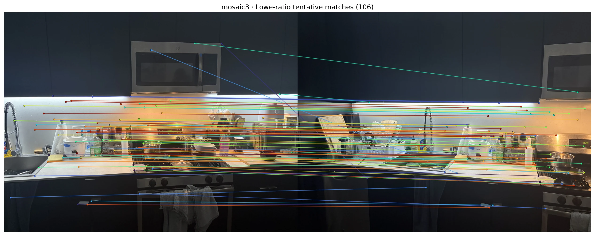
My RANSAC implementation repeatedly samples four non-degenerate matches, fits a homography with the Part A solver, and measures every tentative match's reprojection error. A match is an inlier when its projected point lands within 5 pixels of the observed destination.
After 5,000 trials, I keep the largest consensus set and recompute the homography from all of its inliers using normalized least squares. This final refit is much less sensitive to any one correspondence than the four-point proposal that discovered the set.
Sample four matches without replacement.
Reject nearly collinear samples and solve for H.
Count reprojection errors at or below 5 px.
Refit H using every inlier in the best consensus.
89.1% inliers · 1.51 px median error
76.6% inliers · 2.13 px median error
74.5% inliers · 1.25 px median error
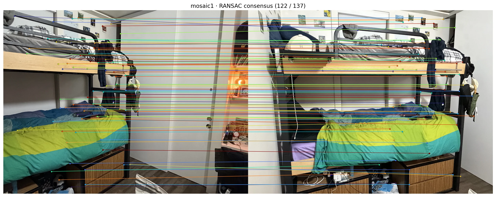
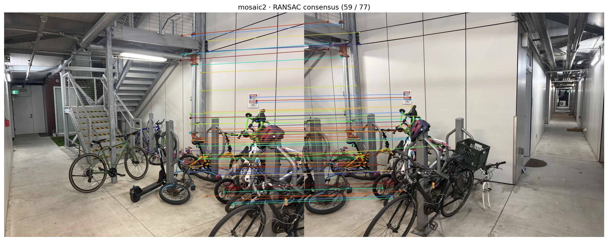
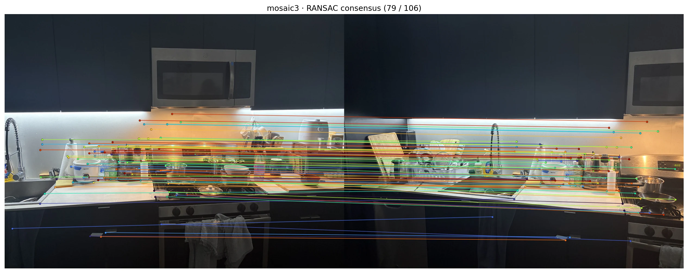
Both columns below use exactly the same bilinear inverse warp, canvas bounds, validity masks, and distance-transform feathering. The left homographies come from my eight hand-picked Part A pairs; the right homographies come entirely from Harris, ANMS, descriptors, ratio matching, and RANSAC.
All three automatic results recover the same scene geometry as their manual counterparts. The bicycle scene retains foreground doubling in both versions, confirming that its main limitation is parallax rather than correspondence selection.
The automatic alignment follows the same rigid bed and wall structure as the manual fit. Dense consensus support makes the small difference in outer projective bounds more noticeable than the seam itself.
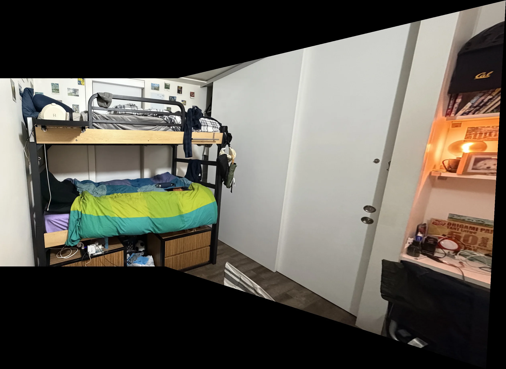
Both methods align the walls, stairs, and corridor while leaving some bicycle doubling. RANSAC correctly finds the dominant background model; one homography still cannot reconcile every foreground depth.
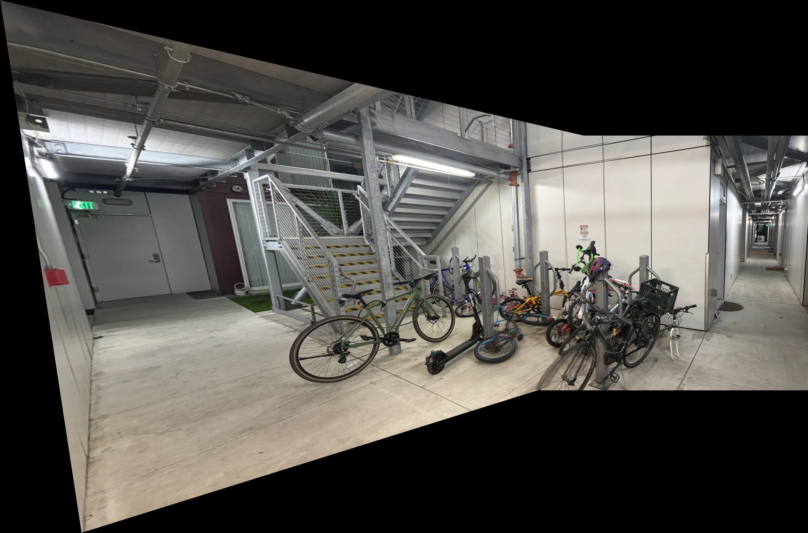
The cabinet and countertop features produce a smooth automatic panorama with the same continuous appliance geometry as the hand-selected result. Its 1.25 px median inlier error is the lowest automatic residual of the set.
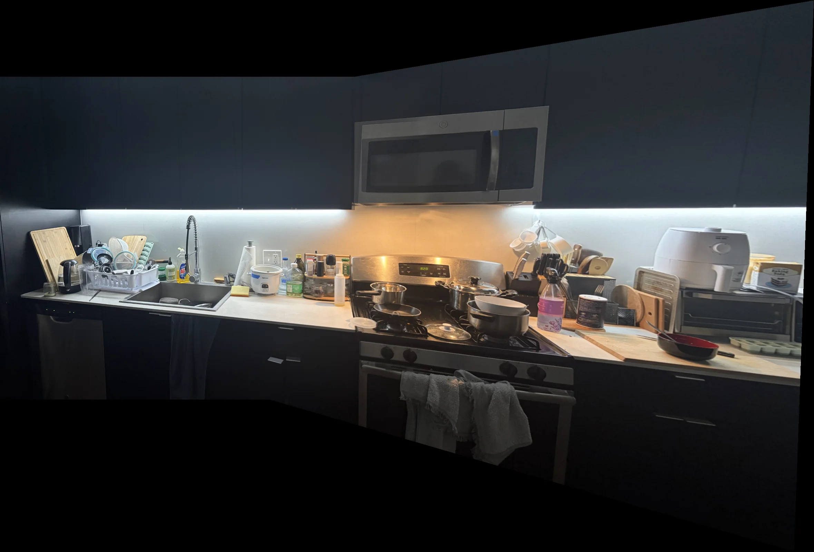
A few pixels of correspondence error can noticeably move an entire projected image.
Asking where every destination pixel came from avoids the holes created by forward splatting.
Distance weights work only when invalid warped pixels are excluded explicitly.
One projective transform cannot perfectly align a translated camera view containing many depths.
ANMS turns a pile of strong corners into a geometrically useful distribution across the image.
Blurred 40×40 neighborhoods remain recognizable after small shifts that would break tiny raw patches.
The nearest-neighbor ratio exposes when a descriptor has no clearly distinctive partner.
RANSAC succeeds without requiring every proposed match to be correct.